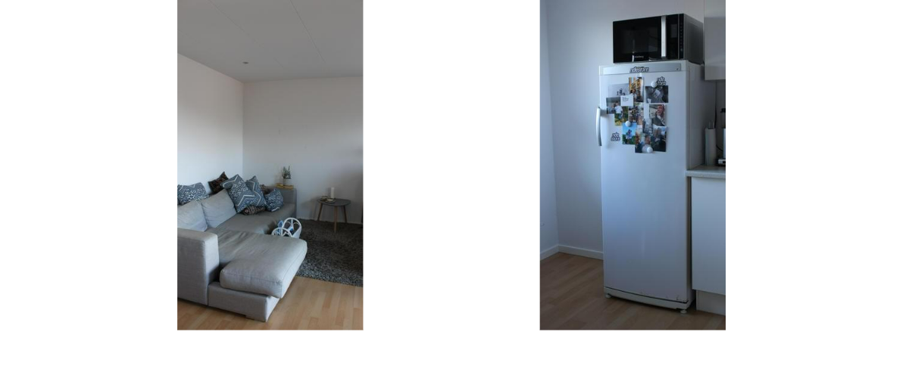

Kunne du flytte hjemmefra for 5000kr.?
Når man kigger rundt i det åbne køkkenalrum, er det ikke til at se at møblerne her har skiftet ejere, før det endte her. Det lugter ikke, og det ligner ikke min bedstemors dagligstue. Det ligner et velmøbleret ungdomshjem. Her bor Jonathan på 22 år med sin kæreste. Stort set alle deres møbler er genbrug, og det er et valg Jonathan tog for to år siden, da han flyttede hjemmefra for første gang.
Nu ved vi jo at du har indrettet dit hjem med genbrugsting. Hvorfor har du valgt det?
”For mig handler det hundrede procent om penge. Man kan købe meget mere og bedre når man handler secondhand. Før syntes jeg at tanken om at andre havde brugt mine ting var klamt.”

Hvornår købte du første gang dit secondhand møbel?
”Det startede med at jeg skulle flytte hjemmefra for første gang. Jeg havde en kæmpe stue, og manglede en stor sofa. Men en sofa kostede mindst 4-5000kr. Ikke engang IKEA-sofaerne var billige. Så foreslog min kæreste at se på Facebook Marketplace. Der fandt jeg en tre persons sofa GRATIS! Og hvad der er endnu bedre er, at jeg solgte den for 400kr. da jeg flyttede fra lejligheden”
Hvad er dit bedste secondhand fund?
”Jeg fandt engang en gratis skabsfryser. Den var lidt beskidt fordi den havde stået i en lade, men min kæreste var så sød at gøre den ren. Den fejlede ingenting.”
Hvor føler du at du får mest for dine penge?
”Helt klart genbrug, eller secondhand – hvad end du vil kalde det. Der er meget guld at hente på Marketplace og i Facebookgrupper. Men jeg går også gerne i IKEA, hvis jeg leder efter noget specifikt. Ellers sender jeg min kæreste i Røde Kors.”
Lige nu trender bæredygtighed helt vildt. Spiller det en rolle for dig at secondhand og genbrug er mere bæredygtigt?
”Nej desværre, overhovedet ikke. Når jeg køber brugt, handler det kun om at få mest ud af mine penge. Jeg elsker biler og kører selv i en rigtig benzinsluger. Men man kan vel sige at jeg kompenserer lidt.”
Du nævnte din kæreste. Er hun ok med at du er så ”god til” genbrug?
”Ja. Det var faktisk hende som introducerede mig til genbrug. Jeg er ikke selv vokset op med genbrug, overhovedet ikke faktisk. Men da jeg selv skulle til at betale, var jeg ikke længere lige så ligeglad. Min kæreste har altid skulle betale selv, så måske er det derfra det kommer. For hende er det mere en livsstil – hun går gerne på storskrald og genbrugspladsen for at ”stjæle”. Det er dog stadig lidt for ekstremt til mig.”
Hvor mange penge vil du skyde på, at det har kostet dig at møblere dit hjem?
”Det er godt nok et godt spørgsmål. Jeg havde min seng og alt mit computerudstyr med hjemmefra. Alt i køkkenet og møbler har nok kostet mig omkring 3500kr. tilsammen. Jeg har også mit kunstgræs og loungesæt på altanen her i sommers, det kostede 1200kr. tilsammen på tilbud. Så der slap jeg billigt.”